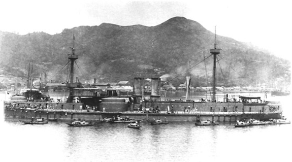

Daly, Hernandez, 6
Battle Ship from Sino Japanese war
1895

(Thiess)
This was a Chinese warship, captured by Japan in the Sino Japanese war. The war, fought from 1895-1895, showed Japanese militaristic amd Imperialistic tendancies, the same tendancies that lead it down the course to joining WWII.